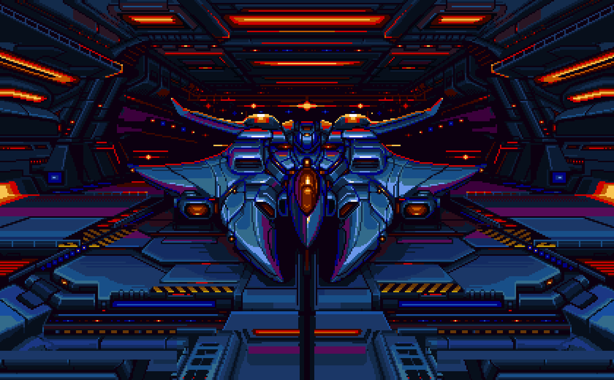
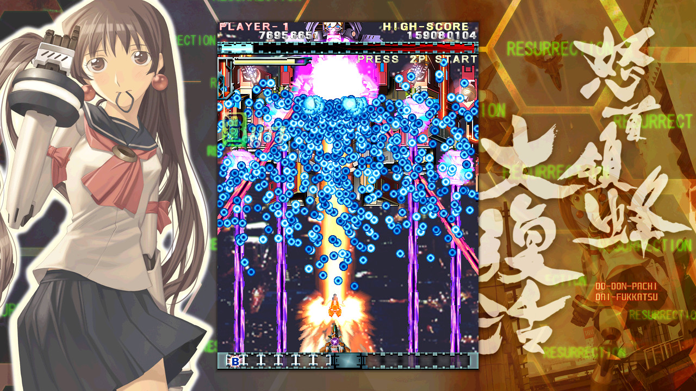

The Long-Forgotten Art of Gaming

You are probably wondering what kind of appeal lies in watching a 2D sprite scroll vertically or horizontally across a screen, blasting other 2D sprites into smithereens. I mean, haven't things moved on since then?
Well, yes. In a way. In a technological way. But for sheer challenge, thrills and fun, shooters still contain all of the components that truly make for a great videogame.
In fact, playing these type of games can often remind us as to why videogames were made to begin with.
Bullet Hell Perhaps the most immediately-recognizable breed of shmup, thanks to its signature blanketing of most of the screen with scads of relatively slow-moving, un-aimed bullets: precise impromptu movements and a small hitbox are essential for weaving through the chaos and living to tell the tale. Once a niche-within-a-niche, a decided majority of contemporary shmup releases fit this description: most of Cave’s output certainly qualifies, alongside that of Takumi, Treasure, and a number of others, though many of these owe some measure of debt to late-era Toaplan and Raizing. Those which feature especially dense patterns, like the “Touhou” series, are sometimes given the label of “danmaku” (literally, “bullet curtain”), though the word is sometimes “retconned” to refer to “bullet hell” shooters in general.
If you utter the word “shooter” in this day and age most gamers will assume that you’re talking about Call of Duty or Halo, but not too terribly long ago those seven letters meant something quite different: they represented the enduring spirit of a time when one button was all you needed, two was a luxury, and three was pushing the envelope. When the only “motivation” you or your onscreen character ever needed to keep going was “the screen doesn’t scroll the other way” “that, and the fleeting opportunity to enter a few measly letters onto a list that would reset every time the machine was unplugged. When pretense, pandering, and half-baked rationalizations were not allowed within spitting distance of the all-important “start” button. “Shooters”, as they were originally conceived, and unlike so many of their “legitimacy”-hungry descendants, make no apologies about what they are and the purpose they were created to serve.
CAVE Interactive CO. LTD. (Japanese: 株式会社ケイブ, Hepburn: Kabushiki Gaisha Keibu), or CAVE for short, is a Japanese video game company founded in 1994 by former employees of Toaplan following its bankruptcy. They are known primarily for their "bullet hell" shoot 'em ups; from 1995 up to 2013, CAVE was one of the most prolific shoot 'em up developers in the Japanese market. Alongside this, CAVE has produced a variety of other types games for arcades, home consoles, PCs, and smartphones, also dating back to 1995.
"CAVE" is an acronym for "Computer Art Visual Entertainment".